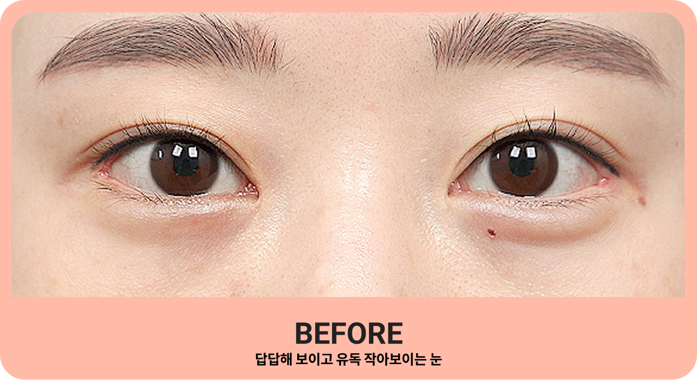

매몰법
DOUBLE EYELID
EYE
매직매몰법은 아주 정교한 수술방법 입니다
거울을 보면서 자연스럽게 쌍꺼풀의 크기와 모양을 정하고 디자인 하게 됩니다
기존의 매몰법과 달리 절개법에서 직접적으로 봉합해 줌으로써
유착이 확실히 생기게 해줍니다.
거울을 보면서 자연스럽게 쌍꺼풀의 크기와 모양을 정하고 디자인 하게 됩니다
기존의 매몰법과 달리 절개법에서 직접적으로 봉합해 줌으로써
유착이 확실히 생기게 해줍니다.
직접봉합!
매직 매몰법은 풀리는 경우가
거의 없습니다.
거의 없습니다.
NO 붓기!
매직 매몰법은 풀리는 경우가
거의 없습니다.
거의 없습니다.
명품 매몰법!
매직 매몰법은 풀리는 경우가
거의 없습니다.
거의 없습니다.
비교하기
BEFORE / AFTER
